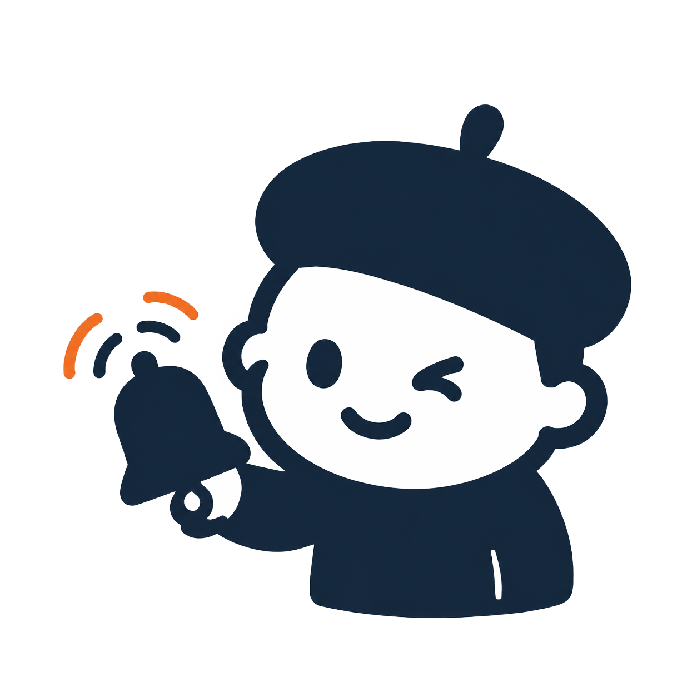
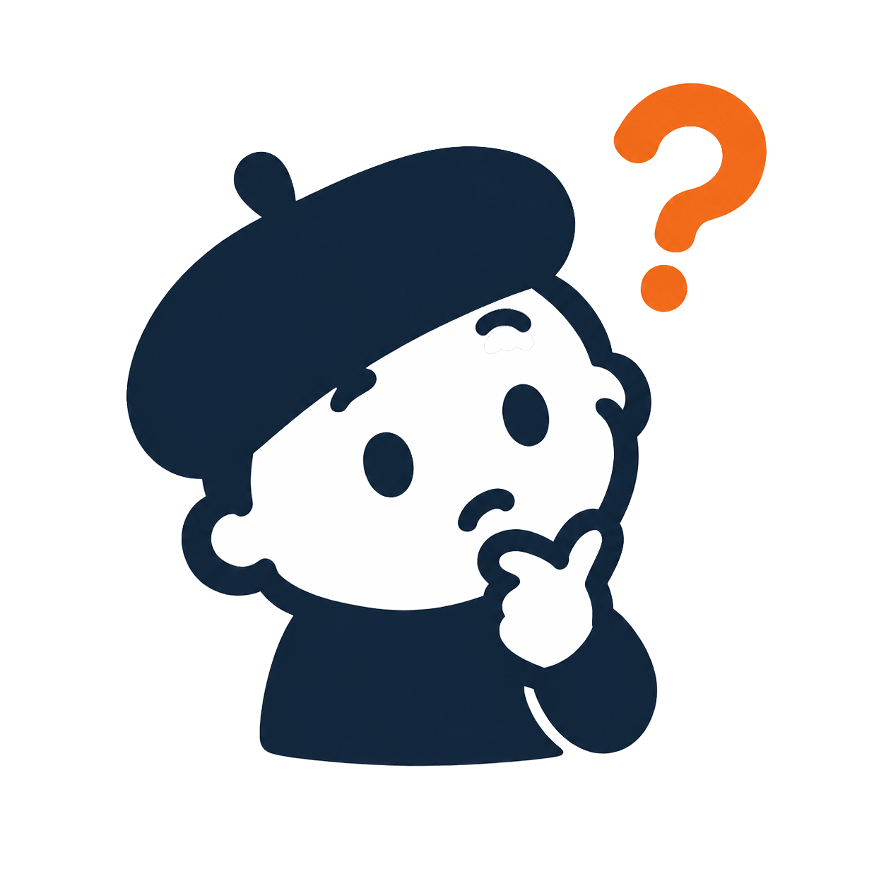

It stays on your Mac
Clipboard history and saved resources stay local. Nothing leaves unless you choose to export or share it.
Clipboard · Agent resources · trusted devices
Keep clipboard history easy to find, manage Prompts, Skills, and MCP servers once, then send selected content and Agent completion reminders to devices you trust.
Everything close at hand, with a ring when work is ready.
https://github.com/JevonsCode/DingDongBuddy
The copied value will appear at the top of Clipboard.
How it works
Clipboard history and saved resources stay local. Nothing leaves unless you choose to export or share it.
An Agent sees the name and a short description first. It opens the full prompt or Skill only when it helps.
Search, filter, and paste recent items without leaving the app you are already using.
Prompts, Skills, and MCP configurations each get the controls they need. Project rules keep each task's suggestions focused.
Pair trusted devices, then send only the new Clipboard items or existing records you explicitly choose.
Ask an Agent to look through the library and point out repeated resources or things you no longer use.
Pick a sound and get called back when an Agent finishes or needs your attention.
Connected devices · Multiple computers
Scan each computer's QR code to add it without replacing existing pairings. See how many computers are online, switch the active one, and keep every Clipboard item, file, draft, and Agent reminder with its source computer.


Longer description · source · completion time
Nothing copied before pairing is backfilled. Existing history moves only through Send to Device.
The PWA never reads it. Phone text or files move only after you choose them and tap Send.
Files are limited to 25 MB, and computer-hosted content becomes unavailable after disconnecting.
DingDong prefers a direct WebRTC connection on the same local network and uses an end-to-end encrypted relay as fallback. Android can use the web app without installing it; iPhone and iPad require a Home Screen web app for Web Push. Tap the tabs or swipe between them on mobile; tapping a notification opens Agent reminders directly. Notification vibration remains controlled by the operating system.
One resource library
Enable and scope each resource in DingDong. Matching Prompts arrive automatically, Skills stay summary-first until selected, and MCP servers become available in the right Agent client.
Enable, group, and scope by project or Agent
These examples assume the matching resources have already been enabled and scoped in DingDong.
The project Prompt is applied automatically before the Agent starts.
The Agent matches the Skill description, then loads its full workflow and files.
The configured MCP is available, and its tools are called only when needed.
Keyboard and settings reference
The global Clipboard shortcut and all three workspace shortcuts can be recorded in Settings and take effect immediately. The table shows DingDong’s defaults.
Open Settings → Keyboard shortcuts to record the global shortcut or any workspace shortcut. DingDong rejects combinations that conflict with an existing app, workspace, or reserved action.
| Action | macOS | Windows |
|---|---|---|
| Open or hide Clipboard | ⌘⇧V | Ctrl+Shift+V |
| Dynamic / Library / Clipboard | ⌃Q / ⌃W / ⌃E | Alt+Q / Alt+W / Alt+E |
| Focus Clipboard search | ⌘F | Ctrl+F |
| Show or hide filters | ⌘R | Ctrl+R |
| Use visible item 1–9 | ⌘1–9 | Ctrl+1–9 |
| Use visible item 1–9 as plain text | ⌥⌘1–9 | — |
| Select visible Clipboard group 1–5 | ⌃1–5 | Alt+1–5 |
| Move Clipboard item selection | ↑ / ↓ | ↑ / ↓ |
| Move Clipboard group selection | ← / → | ← / → |
| Preview selected item | Space | Space |
| Use selected item | Return | Enter |
| Close preview, then hide panel | Esc | Esc |
Settings stay on this computer and apply immediately unless a restart is noted.
| Setting | Default | Options or limits |
|---|---|---|
| Open or hide Clipboard | ⌘⇧V | Configurable; Windows defaults to Ctrl+Shift+V |
| Launch at startup | Off | On / off |
| Hide Dock icon (macOS) | Off | On / off |
| Language | System | System / English / 中文 |
| Theme | Light | System / Light / Dark |
| Window opacity | 90% | 82%–96% |
| Default workspace | Dynamic | Dynamic / Library / Clipboard |
| Clipboard monitoring | Off | On / off |
| Clipboard retention | 5,000 items · 120 days | 20–5,000 items · 1–730 days |
| Remember Recent Agents | On | On / off |
| Recent Agent limits | 500 details · 24-hour count | 1–5,000 details · 1–8,760 hours |
| Completion sound | DingDong Classic | Built-in, custom, system, or muted |
| Menu bar alert color (macOS) | Orange | Orange / Pink / Blue / Green / Purple |
| Local Agent API port | 2333 | 1024–65535 · restart required |
Finish alerts
Choose a sound you can recognize. DingDong also rings when an Agent gets stuck or needs a decision.
You can go take a small break first. In the AI era, your attention is the most valuable asset 🫣
Pick any built-in sound or import your own audio file. Every connected agent uses the sound selected in DingDong Settings.
Choose a sound to preview it
Built-in MCP bridge
Keep one managed Skill package and choose dynamic, user-native, or project-native delivery per Agent. MCP servers connect through native configuration.
Let AI handle the setup
It will preserve your existing settings, connect MCP and completion alerts, then verify both paths.
Ready to copy
Install DingDong, then copy one of these snippets into your Agent's MCP settings.
{
"mcpServers": {
"dingdong": {
"command": "/Applications/DingDong.app/Contents/MCP/bundle/bin/dingdong_mcp"
}
}
}[mcp_servers.dingdong]
command = "/Applications/DingDong.app/Contents/MCP/bundle/bin/dingdong_mcp"dingdong_bridgeAsk DingDong what might help with the task at hand.
dingdong_search_assetsFind prompts, Skills, and MCP configurations by name or keyword.
dingdong_get_assetOpen one resource. Start with the description, then read the full text if needed.
dingdong_load_skillLoad the Skill the Agent has decided to use.
dingdong_recommend_mcpFind an MCP configuration that fits the current task.
dingdong_notifyRing when the task is done, stuck, or waiting for you.
Loopback HTTP API

Prefer scripts? There is a local API too.Check DingDong's status, search resources, read a clipboard overview, or open the page you need.
/agent/manifest
/agent/bridge
/agent/prepare
/agent/workbench
/agent/resource/{id}
/clipboard/insights
/library
/library/export?type=skill
/library/import
/ding
Requires macOS 13 or newer. Not sure which Mac you have? Open Apple menu → About This Mac. “Chip” means Apple silicon; “Processor” means Intel.
Loading GitHub release asset counts…